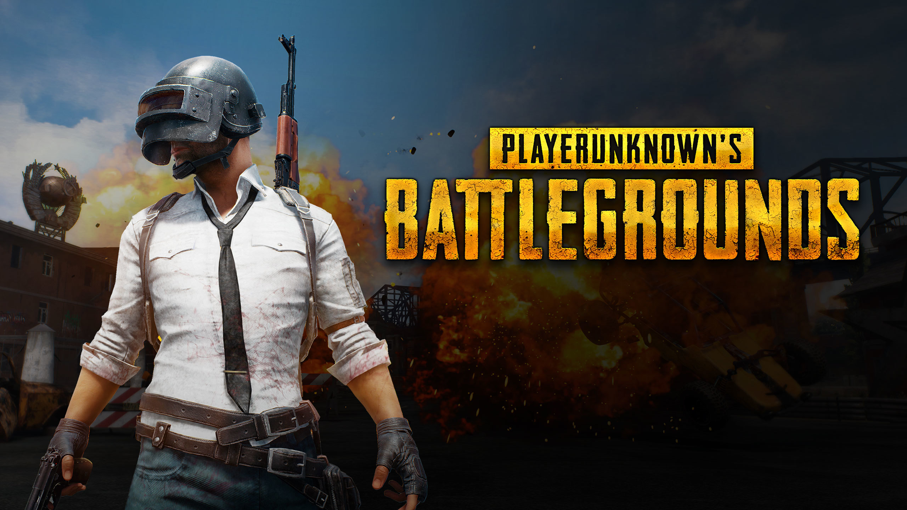

絕地求生
|
|
|
遊戲內容
這款由韓國遊戲公司所打造的生存遊戲，在全球掀起一股熱潮，直到今年12月止，遊玩人數仍然不停地在攀升。遊戲每次都是由最多100人為一場進行，玩家必須在手無寸鐵的狀況下，搭乘飛機選擇自己所欲降落的地點，並在開始後設法撿拾各種槍枝與道具，透過各種手段活到最後。除此之外，本作也支持團隊遊玩，由最多4人組成小隊，互相掩護，使得存活的手段與策略更佳的豐富與多元。這款遊戲的地圖相當大，也有著地形上面的差異，但隨著時間的推進，「電圈」會逐漸的收縮，逼迫僅剩的玩家不得不開始殺戮，而每次收縮到最後的地點皆不進相同，玩家必須設法在最後的決戰點存活下來，這也是本作最令人著迷的刺激感。就是這樣的魅力，使得絕地求生即便在畫面優化上仍有待加強，卻仍舊吸引了大批的玩家遊玩。而在2017年底，絕地求生也推出了測試伺服器，全新的地圖，優化後的介面，新增槍枝，期望在電玩界再投下一顆震撼彈。